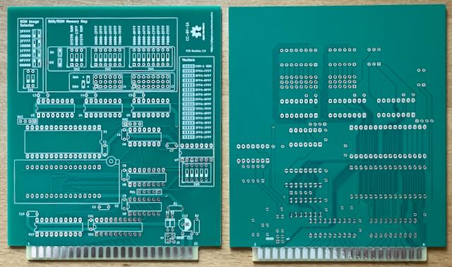
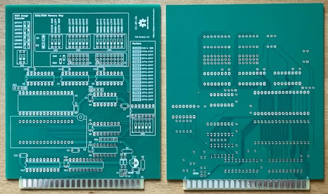
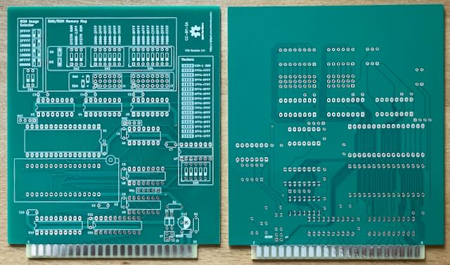

Projekt-Homepage • Interakiver Bestückungsplan

| Komponente | Anzahl | Preis | Anbieter |
| Platine | 1 | €4.00 | |
| 100nF Kondensator | 12 | €0.36 | Reichelt |
| 100µF Elektrolytkondensator, 2.5x6.3mm | 1 | — | |
| 3.3kΩ Widerstand | 2 | €0.06 | Reichelt |
| 4-3 3.3kΩ Widerstandnetzwerk | 2 | €0.22 | Mouser |
| 5-4 3.3kΩ Widerstandnetzwerk | 1 | €0.07 | Reichelt |
| BAT86 Diode | 2 | €0.42 | Reichelt |
| 74LS145 | 3 | €3.03 | Reichelt |
| 74LS08 | 2 | €1.28 | Reichelt |
| 74LS04 | 1 | €0.96 | Reichelt |
| 74LS133 | 1 | €0.46 | AliExpress |
| 74HCT541 | 2 | €0.90 | Mouser |
| 628128 128kx8 RAM | 1 | €4.33 | Reichelt |
| SST39SF020 EEPROM | 1 | €3.12 | Mouser |
| 14-Pin Sockel, schmal | 3 | €0.63 | Reichelt |
| 16-Pin Sockel, schmal | 4 | €0.84 | Reichelt |
| 20-Pin Sockel, schmal | 2 | €0.60 | Reichelt |
| 32-Pin Sockel, breit | 1 | €0.83 | Reichelt |
| 32-Pin ZIF-Sockel, breit | 1 | — | |
| 2xDIP Schalter | 1 | €0.25 | Reichelt |
| 3xDIP Schalter | 1 | €0.25 | Reichelt |
| 5xDIP Schalter | 1 | €0.26 | Reichelt |
| 6xDIP Schalter | 1 | €0.26 | Reichelt |
| 8xDIP Schalter | 1 | €0.71 | Mouser • Reichelt |
| 3x6 Stiftleiste | 1 | €1.38 | Mouser |
| 3x8 Stiftleiste | 1 | €1.84 | Mouser |
| 2x2 Stiftleiste | 1 | €0.05 | Reichelt |
| nur Platine | €4.00 | ||
| Teilbausatz | €27.11 |